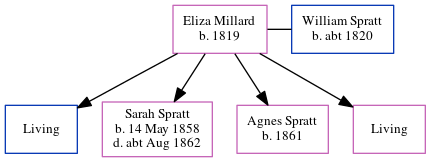

Eliza Spratt (née Millard) 1819 -
[ Home ] | [ Calendar ] | [ Surnames Index ] | [ Census Index ] | [ Family History ]Eliza Millard, the wife of William Spratt (the three times great-uncle of Nigel Horne), was born in Thornbury, Gloucestershire, England in 18191,2,3 and married William (a police man with whom she had 4 children: William Henry, Sarah Jane, Agnes H and Sarah Jane, along with 2 surviving children) in Marylebone, London, England on Jun 23, 18534.
During her life, she was living at Little Chesterfield Street in Marylebone on Apr 7, 18611; and at New Chesterfield Street in Marylebone on Apr 2, 18712 and on Apr 3, 18813.
Children
- Sarah Jane was born on May 14, 1858
- Agnes H was born in 1861
Citations
- 1861 England, Wales & Scotland Census - Findmypast (was age 39 and the wife of the head of the household)
- 1871 England, Wales & Scotland Census - Findmypast (was age 50 and the wife of the head of the household)
- 1881 England, Wales & Scotland Census - Findmypast (was age 62 and the head of the household)
- England & Wales Marriages 1837-2005 - Findmypast
Media
1881 England, Wales & Scotland Census - GBC/1881/0000695405
Family Tree
Generated by ged2site. Last updated on Jun 11, 2024